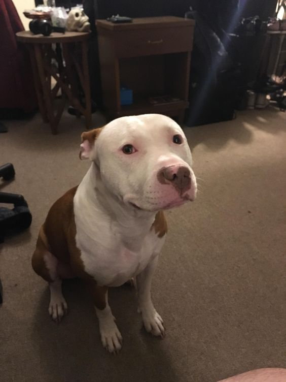
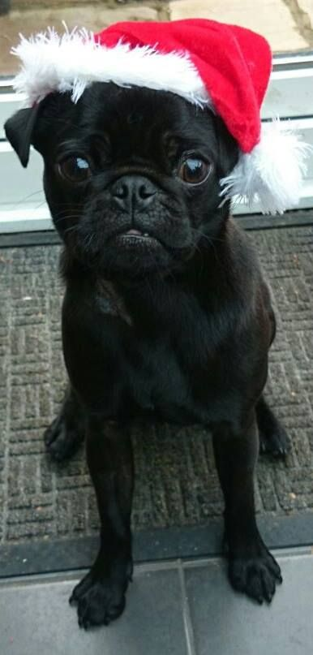

American Bully
| Photo | Breed | Description |
|---|
|
American Bully |
The American Bully is a very good dog, smart, obedient, and very easy to train. They are known for their high energy but general peace loving nature. |
|---|
 |
Bombay Cat |
The Bombay Cat is a majestic and classic breed of creature, although associated with the stereotypical spiritual belief that they are unlucky, I would not call this cute cat a bad omen. |
|---|
|  | Pitbull |
The Pitbull, though having similarities to the American Bully in terms of appearance, is a unique dog. Having been known as violent and aggresive, they really are the opposite, for it is owners to blame for how their dogs end up. |
|---|
 |
Sphynx Cat |
The Sphynx Cat is a very unique looking cat, it is a furless feline that has t's skin exposed all throoughout it's body, it is also famous as a meme called "Bingus". |
|---|
 |
Orange Tabby Cats |
The Orange Tabby Cats do not have a particular breed name and rely more on the color of their fur, hence the name "Orange Tabby Cat". Enjoyed by many and said to be a troublemaker cat, garfield was also a orange tabby cat. |
|---|
|  | Pug Dog |
The Pug dog is a favorite of mine that I have always wanted to have, it is a particularly small breed of dog that are smart and very cuddly. |
|---|
 |
Husky Dog |
The Husky dog is known for their intelligence and noisy breed, known for being able to howl and be a drama queen in the internet. |
|---|
 |
German Shepherd |
Known for their intelligence and utmost military and trainability personalities, the german shepherd dog is a must if you want a smart and silly dog. |
|---|
 |
Golden Retriever |
Known for being one of the smartest and beautiful ogs, the Golden Retriever is a spot-on retriever (hence the name) and once adult has a beautiful golden shiny fur. |
|---|
 |
Pallas Cat |
The Pallas Cat are a type of wild cat that cannot be domesticated, they are found in the wild and are usually seen being chunky. |
|---|
References:
American Bully Image(Unknown User, 2018)
Bombay Cat Image (Marisol ❤ on Twitter, 2021)
Pitbull Image(Pitbullers, 2022)
Sphynx Cat(r/haydongers, 2020, Reddit.com)
Orange Tabby Cat Image(orange cat lover, twitter)
Pug Wearing Hat Image(Keely pedrick, Pinterest)
Silly Husky dog(NickDiv, Pinterest)
Silly German Shepherd(J D, Pinterest)
{kind=link}